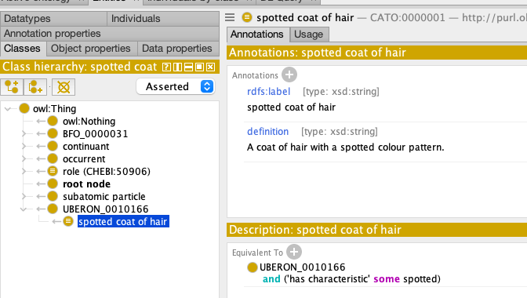

Using DOSDP templates in ODK Workflows¶
Preparation¶
- You are set up for executing ODK workflows
- We assume you have a modern ODK-based repository (ODK version >= 1.2.32) set up. For a tutorial on creating a new ontology repo from scratch see here.
- We assume you have completed at least one of the general DOSDP tutorials.
Tutorial¶
Video¶
This is a very unprofessional video below recorded as part of one of our trainings. It walks you through this tutorial here, with some additional examples being given and a bit of Q&A.
Glossary¶
- Template: A document with template strings that include variables which can be instantiated my a tool. For example, a ROBOT template may contain the template string
SC 'part of' some %which can be instantiated byROBOTto be transformed into an OWL axiom:SubClassOf(CATO:001 ObjectSomeValuesFrom(BFO:0000051 UBERON:123)). Similarly, DOSDP YAML files are often referred to as "templates" (which is appropriate). Unfortunately, we often refer to them as "patterns" which is not strictly the right way to name them: they are templates that encode patterns (and that only to a limited extend). We recommend to refer to the DOSDP YAML files as "templates". - Template string: See above: a single string with one or more slots for variables that can be instantiated and transformed into something else. The most important template string in DOSDP is the
equivalentToorsubClassOffield: It tells DOSDP tools how to generate an OWL axiom, with which variable slots (vars). - Pattern: See above, often misused to mean Template. In fact, a pattern provides a general modelling solution to a problem. Patterns can often be encoded in templates, but this is often incomplete. For example, a template typically does not care about the semantics of the properties it refers to, while this is critical for a pattern. (Avoid using this when talking about DOSDP YAML files).
- DOSDP template table: The spreadsheet (typically TSV or CSV) that contains the DOSDP variable data. The DOSDP template table is applied to the template string in the template to generate a set of OWL axioms and annotation assertions.
Preparation¶
This tutorial assumes you have set up an ODK repo with this config:
id: cato
title: "Cat Anatomy Ontology"
github_org: obophenotype
git_main_branch: main
repo: cat_anatomy_ontology
release_artefacts:
- base
- full
- simple
primary_release: full
export_formats:
- owl
- obo
- json
import_group:
products:
- id: ro
- id: pato
- id: omo
robot_java_args: '-Xmx8G'
Activate DOSDP in ODK¶
In your src/ontology/{yourontology}-odk.yaml file, simply add the following:
This flag activates DOSDP in ODK - without it, none of the DOSDP workflows in ODK can be used. Technically, this flag tells ODK the following things:
- The
src/ontology/Makefileis extended as follows: - A set of
pipelines, or workflows, for processing patterns, e.g.pattern_schema_checksfor validating all DOSDP templates,patternsto regenerate all patterns. - A new directory,
src/patterns, is created with the following files: src/patterns/pattern.owl: This is an ontology of your own patterns. This can be used to browse the your pattern in the form of a class hierarchy, which can help greatly to understand how they relate logically. There are some flaws in this system, like occasional unintended equivalencies between patterns, but for most uses, it is doing ok.src/patterns/definitions.owl: This is the merged ontology of all your DOSDP generated classes. Basically, if you manage your classes across multiple DOSDP patterns and tables, their generated OWL axioms will all be added to this file.src/patterns/external.txt: This file can be used to import external patterns. Just add the (p)URL to a pattern to the file, and the DOSDP pipeline will import it when you run it. We use this a lot when sharing DOSDP templates across ontologies.- Two README files: one in the directory of the default DOSDP data pipeline (
src/patterns/data/default/) and one in thesrc/patternsdirectory. The former points you to the place where you should put, by default, any DOSDP data tables. More about that in the next sections.
To fully activate DOSDP in your ontology, please run:
This will:
- Update your ontology repository to whatever ODK you have installed in docker (
v1.3, for example) - Apply any changes to your configuration file. For example, the fact that you have activated the DOSDP pipeline in your config file will lead to the ODK extending your
Makefilein certain ways
Adding a first, simple template¶
(1) Create a new file src/patterns/dosdp-patterns/haircoat_colour_pattern.yaml and paste the following content:
pattern_name: haircoat_colour_pattern
pattern_iri: http://purl.obolibrary.org/obo/obo-academy/patterns/haircoat_colour_pattern.yaml
description: "
Captures the multicoloured characteristic of the fur, i.e. spotted, dotted, motley etc."
classes:
colour_pattern: PATO:0001533
coat_of_hair: UBERON:0010166
relations:
has_characteristic: RO:0000053
vars:
colour_pattern: "'colour_pattern'"
name:
text: "%s coat of hair"
vars:
- colour_pattern
def:
text: "A coat of hair with a %s colour pattern."
vars:
- colour_pattern
equivalentTo:
text: "'coat_of_hair' and 'has_characteristic' some %s"
vars:
- colour_pattern
(2) Let's also create a simple template table to capture traits for our ontology.
Note: the filename of the DOSDP template file (haircoat_colour_pattern.yaml) excluding the extension must be identical
to the filename of the template table (haircoat_colour_pattern.tsv) excluding the extension.
Let's create the new file at src/patterns/data/default/haircoat_colour_pattern.tsv.
We are creating a minimal table here with just two columns:
defined_classrefers to the ID for the term that is being modelled by the template (mandatory for all DOSDP templates)colour_patternrefers to the variable of the same name specified in thevars:section of the DOSDP template YAML file.
DOSDP generate: Turning the template tables into OWL axioms¶
Next, we will get a bit used to various commands that help us with DOSDP-based ontology development.
Lets first try to transform the simple table above to OWL using the ODK pipeline (we always use IMP=false to skip refreshing imports, which can be a lengthy process):
This process will will create the ../patterns/definitions.owl file, which is the file that contains all axioms generated by all templates you have configured. In our simple scenario, this means a simple single pattern. Let us look at definitions.owl in your favourite text editor first.
Tip: Remember, the `-B` tells `make` to run the make command no matter what - one of the advantages of `make` is that it only runs a command again if something changed, for example, you have added something to a DOSDP template table.
Tip: Looking at ontologies in text editors can be very useful, both to reviewing files and making changes! Do not be afraid, the ODK will ensure you wont break anything.
Let us look in particular at the following section of the definitions.owl file:
# Class: <http://purl.obolibrary.org/obo/CATO_0000001> (http://purl.obolibrary.org/obo/PATO_0000333 coat of hair)
AnnotationAssertion(<http://purl.obolibrary.org/obo/IAO_0000115> <http://purl.obolibrary.org/obo/CATO_0000001> "A coat of hair with a http://purl.obolibrary.org/obo/PATO_0000333 colour pattern."^^xsd:string)
AnnotationAssertion(rdfs:label <http://purl.obolibrary.org/obo/CATO_0000001> "http://purl.obolibrary.org/obo/PATO_0000333 coat of hair"^^xsd:string)
EquivalentClasses(<http://purl.obolibrary.org/obo/CATO_0000001> ObjectIntersectionOf(<http://purl.obolibrary.org/obo/UBERON_0010166> ObjectSomeValuesFrom(<http://purl.obolibrary.org/obo/RO_0000053> <http://purl.obolibrary.org/obo/PATO_0000333>)))
These are the three axioms / annotation assertions that were created by the DOSDP pipeline. The first annotation is a simple automatically generated definition. What is odd at first glance, is that the definition reads "A coat of hair with a http://purl.obolibrary.org/obo/PATO_0000333 colour pattern." - what does the PATO:0000333 IRI do in the middle of our definition? Understanding this is fundamental to the DODSP pattern workflow, because it is likely that you will have to fix cases like this from time to time.
The DOSDP workflow is about generating axioms automatically from existing terms. For example, in this tutorial we are trying to generate terms for different kinds of hair coats for our cats, using the colour pattern (PATO:0001533) hierarchy in the PATO ontology as a basis. The only one term we have added so far is spotted (PATO:0000333). The problem is though, that dosdp-tools, the tool which is part of the ODK and responsible for the DOSDP workflows, does not know anything about PATO:0000333 unless it is already imported into the ontology. In order to remedy this situation, lets import the term:
ODK will automatically see that you have used PATO:0000333 in your ontology, and import it for you. Next, let us make sure that the our edit file has the correct import configured. Open your ontology in a text editor, and make sure you can find the following import statement:
Replace cato in the PURL with whatever is the ID of your own ontology. Also, do not forget to update src/ontology/catalog-v001.xml, by adding this line:
<group id="Folder Repository, directory=, recursive=false, Auto-Update=false, version=2" prefer="public" xml:base="">
...
<uri name="http://purl.obolibrary.org/obo/cato/patterns/definitions.owl" uri="../patterns/definitions.owl"/>
...
</group>
Important: Remember that we have not yet told dosdp-tools about the freshly imported PATO:0000333 term. To do that, lets run the DOSDP pipeline again:
A quick look at src/patterns/definitions.owl would now reveal your correctly formatted definitions:
AnnotationAssertion(<http://purl.obolibrary.org/obo/IAO_0000115> <http://purl.obolibrary.org/obo/CATO_0000001> "A coat of hair with a spotted colour pattern."^^xsd:string)
Now, we are ready to view our ontology (the edit file, i.e. src/ontology/cato-edit.owl) in Protege:

Still a few things to iron out - there is an UBERON term that we still need to import, and our class is not a subclass of the CATO root node, but we had a good start.
Re-using externally defined patterns¶
Re-using terms is at the heart of the OBO philosophy, but when it comes to re-using axiom patterns, such as the ones we can define as part of a ROBOT template, we are (as of 2022) still in the early stages. One thing we can do to facilitate re-use is to share DOSDP templates between different projects. We do that by simply adding the URL at which the pattern is located to src/patterns/dosdp-patterns/external.txt. Note: if you are copying a URL from GitHub, make sure it is the raw url, i.e.:
- src/patterns/dosdp-patterns/external.txt
https://raw.githubusercontent.com/obophenotype/bio-attribute-ontology/master/src/patterns/dosdp-patterns/entity_attribute.yaml
Here, we randomly decided to import a pattern defined by the Ontology of Biological Attributes (an ontology of traits such as tail length or head size), for example to represent cat traits in our Cat Ontology. After adding the above URL to our the external.txt file, we can add it to our pipeline:
You will now see the entity_attribute.yaml template in src/patterns/dosdp-patterns. We will not do anything with this template as part of this tutorial, so you can remove it again if you wish (by removing the URL from the external.txt file and physically deleting the src/patterns/dosdp-patterns/entity_attribute.yaml file).
DOSDP pipelines in ODK¶
Sometimes, we want to manage more than one DOSDP pipeline at once. For example, in more than one of our projects, we have some patterns that are automatically generated by software tools, and others that are manually curated by ontology developers. In other use cases, we sometimes want to restrict the pattern pipelines to generating only logical axioms. In either case, we can add new pipelines by adding the following to the src/ontology/youront-odk.yaml file:
pattern_pipelines_group:
products:
- id: manual
dosdp_tools_options: "--obo-prefixes=true --restrict-axioms-to=logical"
- id: auto
dosdp_tools_options: "--obo-prefixes=true"
This does the following: It tells the ODK that you want
Reference¶
A full example ODK configuration¶
id: cato
title: "Cat Anatomy Ontology"
github_org: obophenotype
git_main_branch: main
use_dosdps: TRUE
repo: cat_anatomy_ontology
release_artefacts:
- base
- full
- simple
primary_release: full
export_formats:
- owl
- obo
- json
import_group:
products:
- id: ro
- id: pato
- id: omo
robot_java_args: '-Xmx8G'
pattern_pipelines_group:
products:
- id: manual
dosdp_tools_options: "--obo-prefixes=true --restrict-axioms-to=logical"
- id: auto
dosdp_tools_options: "--obo-prefixes=true"
ODK configuration reference for DOSDP¶
| Flag | Explanation |
|---|---|
| use_dosdps: TRUE | Activates DOSDP in your ODK repository setup |
| pattern_pipelines_group: products: - id: manual dosdp_tools_options: "--obo-prefixes=true --restrict-axioms-to=logical" |
Adding a manual pipeline to your DOSDP setup in which only logical axioms are generated. |